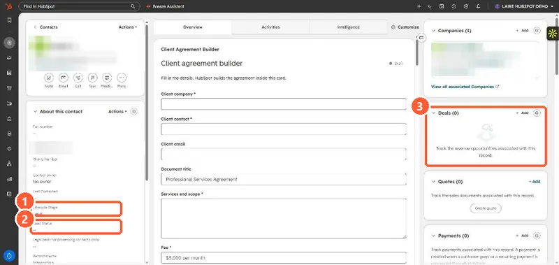

Short answer
Lifecycle stage (contacts and companies) is where the record sits in the marketing and sales process, from subscriber to customer. HubSpot tools only move it forward. Lead status (contacts and companies) is the outreach status while someone is being worked as a lead. HubSpot describes it as the sub-stages within Sales Qualified Lead. Deal stage belongs to each deal and tracks one opportunity through a pipeline. One contact can have one lifecycle stage and many deals.
1. On one record
A contact in my demo portal: Lifecycle Stage is Lead, Lead Status is empty, and the Deals card shows none.


2. The three side by side
- Lifecycle stage: one value per contact or company. Moves forward automatically. Use it for funnel counts.
- Lead status: one value per contact or company. Set by reps or workflows. Use it for outreach queues.
- Deal stage: one value per deal, many deals per contact. Use it for pipeline and forecast.
3. Where leads fit
The separate Leads object has its own pipeline for prospecting work. See the leads object. To keep lifecycle in step with deals, see lifecycle stage automation from deals.